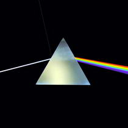
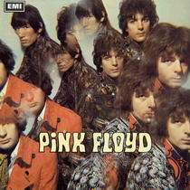
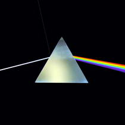
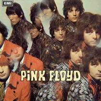

С приходом Гилмора группа стала менее «странной», зато боее работоспособной. Музыканты стали выпускать минимум по альбому в год: Ummagumma и More (1969), Atom Heart Mother и саундтрек к фильму М. Антониони Zabriskie Point (1970), Meddle (1971), Obscured By Clouds (1972). Звуковые дорожки альбомов наполнились многочастными композициями, разностилевыми экзерсисами, электронными экспериментами. В философском плане музыка группы пыталась объять всю вселенную во всем ее совершенстве и одновременной дисгармонии. Популярность росла как на дрожжах: в 1969 в Лондоне состоялся концерт группы, собравший 100 тысяч зрителей. Другим важным событием в жизни Pink Floyd стало выступление в кратере вулкана близ Помпей (1972), которое было записано на пленку и выпущено в виде фильма-концерта.
В 1970-е годы группа достигла пика популярности и мастерства. Один из самых известных альбомов Dark Side Of The Moon (1973) стал поистине бестселлером за всю историю рок-музыки (только официально было продано более 30 миллионов экземпляров). Именно при записи этого альбома по-настоящему проявились талант автора текстов Уотерса и непревзойденное мастерство гитариста Гилмора. Альбом представляет собой цельное повествование о жизни человека на этой земле: рождение (Breathe), вхождение в современную жизнь и знакомство с ее базовыми ценностями (Time и Money) и, наконец, постепенная утеря разума и уход на «темную сторону Луны» (Brain Damage и Eclipse).
1975 год стал годом зенита славы для группы. Песню Shine On You Crazy Diamond (посвященная Сиду Баррету) с нового альбома Wish You Were Here все в один голос признали шедевром, а сам альбом поставил рекорд по пребыванию в чартах. Также очень сильным получилась работа Pink Floyd 1977 – Animals, сочиненная по мотивам повести-притчи Дж. Оруэлла «Скотный двор». В альбоме собаки, свиньи и овцы используются как метафоры для описания или обличения членов современного общества. Музыка «Animals» значительно более основана на использовании гитар, чем предыдущие альбомы, что возможно связано с возрастающим напряжением между Уотерсом и Ричардом Райтом, который не внёс большого вклада в альбом. В 1978 Райт и Гилмор выпустили свои сольные альбомы, возникли о слухи о возможном распаде группы. Но в 1979 Pink Floyd записывает свой, можно сказать, культовый альбом в жанре рок-оперы The Wall («Стена»), который по продажам уступил только альбому Dark Side Of The Moon. Рок-опера The Wall была создана практически полностью Роджером Уотерсом и получила восторженный приём у публики. Песня из этого альбома Another Brick In The Wall, резко обличающая систему образования, стала хитом номер один. «Стена» оставалась в списке альбомов-бестселлеров на протяжении 14 лет.
В 1982 кинорежиссер Алан Паркер создал замечательный одноименный фильм по этому произведению (в роли Пинка снялся известный рок-музыкант Боб Гелдоф). Фильм можно назвать провокационным, так как одной из основных идеей был протест против устоявшихся идеалов и английской страсти к порядку. Также фильм являлся определённым манифестом в защиту рокеров. В фильме «Стена» прямо не показывается ни одна из проблем. Весь фильм соткан из аллегорий и символов, например, безликие подростки, которые один за другим падают в мясорубку и превращаются в однородную массу.
В 1979 из-за разногласий с Уотерсом замечательный клавишник Райт оставил группу. Отношения между участниками группы не улучшались. На вопрос, почему же музыканты все еще вместе, Гилмор не без черного юмора отвечал: «Потому что мы еще не разобрались друг с другом». Альбом The Final Cut (1983), посвященный проблемам современной политики, остался почти незамеченным, и только сингл Not Now John вошел в тридцатку лучших. В 1984 Уотерс решил начать сольную карьеру, его примеру последовали Мейсон и Гилмор, но никому из этих музыкантов не удалось даже приблизиться к достижениям их совместных выступлений. Наибольший успех получил альбом «Amused to Death» («Позабавили до смерти») Роджера Уотерса. В 1987 Мейсон и Гилмор, отсудившие у Уотерса в результате продолжительной тяжбы права на название группы, решили вернуться под знамена Pink Floyd; их примеру последовал и Райт. Вскоре состоялись многомесячные гастроли за рубежом. Результатом воссоединения Pink Floyd стал выпуск двух альбомов Delicate Sounds Of Thunder (1988) и Division Bell (1994).
С 1994 года и альбома «The Division Bell» «Пинк Флойд» больше не выпускали студийных материалов. Единственными результатами работы группы стали концертный альбом 1995 года «P.U.L.S.E» («Пульс»), живая запись «Стены», скомпилированная из концертов 1980 и 1981 годов «Is There Anybody out There? The Wall Live 1980–1981» («Есть ли кто снаружи? Стена вживую, 1980–1981») в 2000 году; двухдисковый набор, содержащий наиболее значимые хиты группы «Echoes» («Эхо») в 2001 году; посвящённое 30-летнему юбилею альбома переиздание «Dark Side of the Moon» в 2003 году. Второго июля 2005 года, на один вечер отбросив прошлые разногласия, «Пинк Флойд» выступили в своём классическом составе (Уотерс, Гилмор, Мэйсон, Райт) на всемирном шоу «Live 8», посвящённом борьбе с нищетой.
На главную